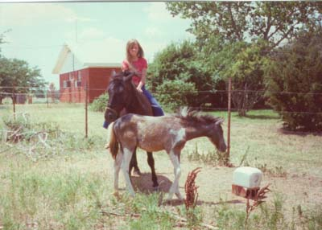
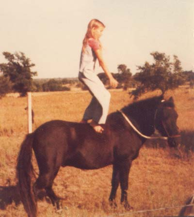

Me and Midnight I got him when I was 9, and lost him when
I was 17.
He was probably 12.2 or so, but he always
seemed big to me.
I taught him whatever was in the horse
magazine that month.
Once we started jumping, I got hooked.
When I was 16, I think, I
started taking lessons.
As Mother says, There will Always be a
Pony called Midnight.

I was about 10 here. The baby was
Lazer, who was an orphan that I raised from 17 days. Note the 'bridle',
a piece of rope around his nose.
I think this was how I started him
jumping.
I think this is when the slouch started.
(look at those knees - his, not mine)
No helmet, no saddle...
I look at these now and wonder why
he even jumped. That pole was barely there.
I guess I started riding more aggressively.
Still no saddle, but it's a real bridle here. From what I remember, the
other ones were a halter and war bridle.

Useful for getting mistletoe out of
trees. (this was the hackmore stage)